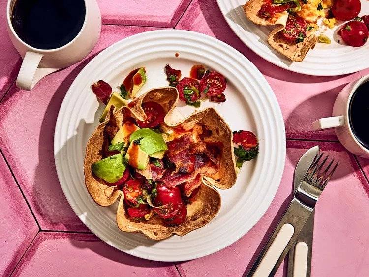

Breakfast Buritto Bowl

Ingredients
- 4 slices center-cut bacon
- cooking spray
- 2 (8-inch) flour tortillas
- 4 large eggs
- 1/2 cup shredded pepper Jack cheese, divided
- 3/4 teaspoon adobo seasoning, divided
- 1/2 teaspoon kosher salt, divided
- 1 cup cherry tomatoes, halved
- 1/4 cup chopped fresh cilantro
- 2 scallions, thinly sliced
- 2 tablespoons freshly squeezed lime juice
- 1 avocado, diced